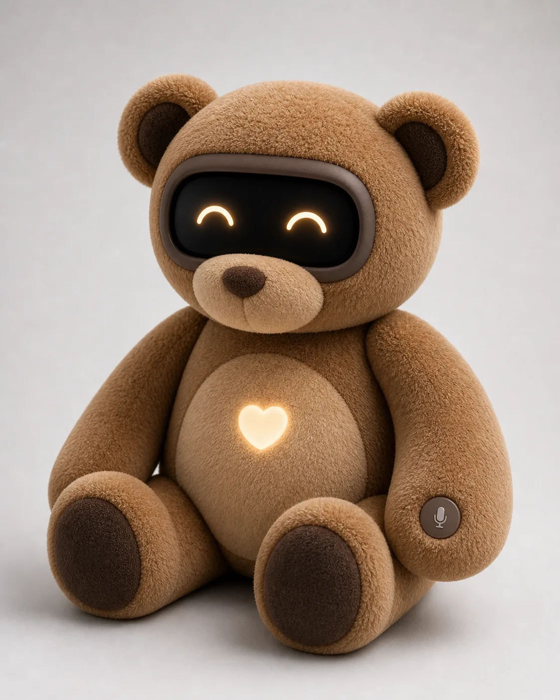
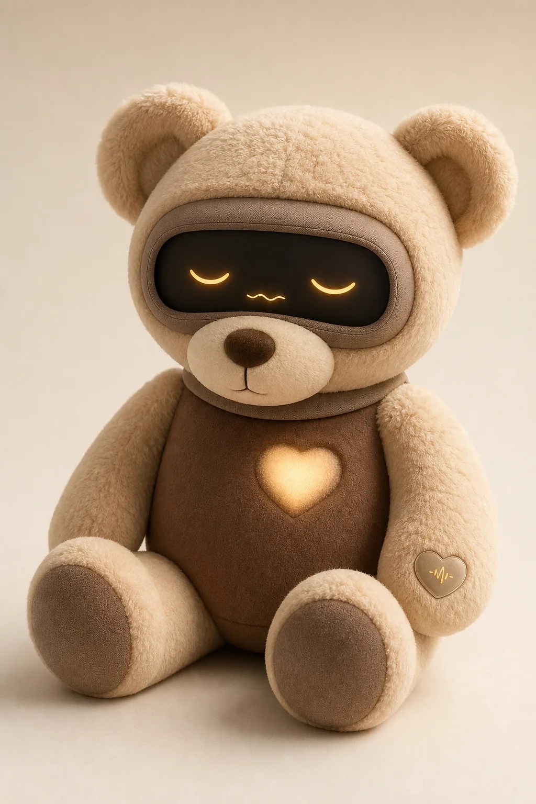
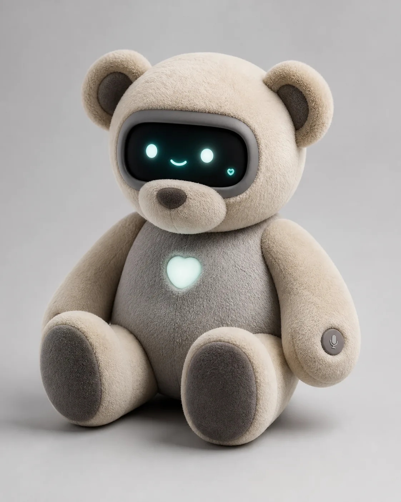
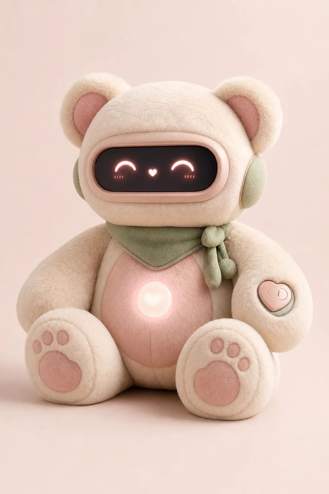
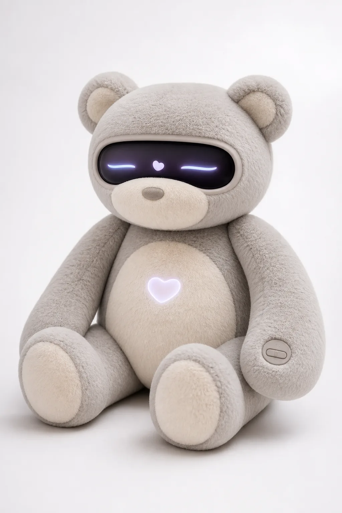
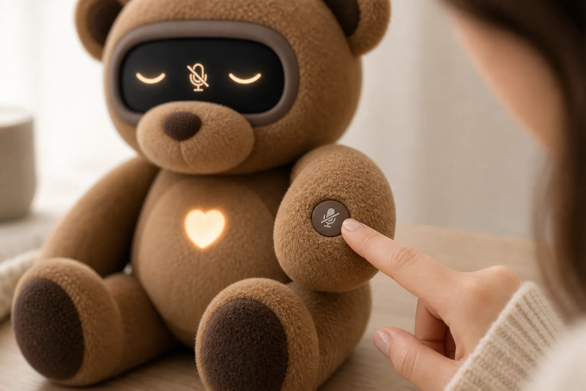

Koda AI Teddy Companion for calm, routines, and privacy.
Koda is a soft, comforting AI-powered companion designed for your emotional well-being, routines, and peace of mind. Warm enough to hug, expressive enough to reassure, and 100% camera-free for absolute privacy.
100%
Camera-Free Privacy
ASTM
Toy Safety Certified
Premium
Huggable Fabric

Support Throughout the Day
From busy mornings to stressful afternoons and relaxing bedtimes, Koda integrates seamlessly into your environment as a soothing comfort anchor.
The Design Journey
We designed five distinct visual variations, balancing classic plush toy appeal, modern digital simplicity, and therapeutic presence, before finding Koda's perfect balance.

1. Bedtime Companion
A warm cream and cocoa plush teddy centered purely on sleep routines, ambient noise, and bedtime anxiety relief. Very soft, but slightly too specific.

2. Modern Support Bear
Our first step into an AI modern structure with a sleek oat-white and gray palette, chest heart, and teal display. The structure was perfect, but the colors felt cold.

3. Soft Kawaii Companion
A warm pastel-blush and cream design focused on charm and bright visual positivity. Highly popular with teens, but slightly too juvenile for therapeutic adult support.

4. Therapeutic Plush
An elegant wellness concept boasting high clinical credibility and minimalist design for sensory relief. Felt premium, but missed the traditional teddy warmth.
5. Classic Brown (Chosen)
Our final selected model. Integrates the modern face-screen bezel and paw buttons of Concept 2 into a classic, comforting honey-brown plush body that adults and kids love.
Koda sensory support plush for calm daily routines.
Designed not as a voice assistant or a surveillance speaker, but as a sensory comfort anchor. Koda pairs the traditional emotional reassurance of a weighted plush teddy bear with gentle companion intelligence to help you breathe, wind down, and disconnect.
Crafted for Calming Sensory Stimulation
Every inch of Koda is custom-engineered to engage tactile, thermal, and visual calm, alleviating daily anxiety through physical anchoring.
Weighted Calming Core
Weighted inner sensory glass micro-beads are distributed inside the teddy's lower body, simulating the deep pressure touch (DPT) of a weighted blanket to lower heart rates.
Natural Thermal Warmth
An inside thermal venting plate runs at a constant, comfortable 98°F, giving the plush cover the lifelike warmth of a real cuddling pet without hot spots.
Guided Pacing Lights
The glowing chest heart pulses in perfect 4-7-8 breathing cycles. Matching your physical breath to Koda's soft chest glow anchors anxiety during work stress or bedtime.
Zero Clinical Metal
Constructed with a fabric-first casing, recessed matte bezels, and highly cushioned seams. There are no metallic edges or visible camera lenses to feel intrusive.
Pre-order Koda, the camera-free AI teddy bear companion.
Koda is the world's first soft AI-powered teddy designed to relieve anxiety, establish healthy routines, and protect your privacy. No cameras, no surveillance speakers—just cozy emotional support.
Reserve Your First Batch Koda
Claim your free reservation today (Est. shipping Late Fall 2026). $0 initial down payment.
How Koda Redefines Smart Companionship
Most home assistants are rigid, non-huggable speakers designed for surveillance. Classic toys lack active emotional care. Koda merges physical softness with private intellect.
| Product Feature | Standard Smart Speaker | Traditional Stuffed Bear | Koda Support Bear |
|---|---|---|---|
| Huggability & Comfort | ❌ Cold hard plastic | ✓ Soft but static | ✓ weighted & ultra-soft |
| Active Listening & Support | ✓ Conversational | ❌ Silent | ✓ Warm, calm intelligence |
| 100% Camera-Free | ❌ surveillance threat | ✓ Safe | ✓ 100% Camera-Free Promise |
| Physical Mic Disconnect | ❌ Virtual setting only | ✓ Safe | ✓ Physical tactile paw button |
| Guided Sensory Calming | ❌ Noisy alerts | ❌ No interaction | ✓ Pulses breathing lights |
Select Your Pre-Order Bundle
No payment is required today. Select a bundle below to lock in your discount pricing for late Fall shipping.
Bedside Companion (12")
Perfect size for desk, nightstand, and cuddling.
- ✦ Weighted Calming Core inside
- ✦ 98°F Natural Body Heat emulated
- ✦ Physical microphone paw button
- ✦ ASTM F963 Toy Safety certified
Travel Companion (8")
Compact, travel-ready with an integrated shoulder strap.
- ✦ Lightweight compact sensory plush
- ✦ Built-in flexible travel pack strap
- ✦ Local offline-memory companion mode
- ✦ Fully machine-washable shell
Comfort Suite Bundle
Get both companions—one for the home and one for the road.
- ✦ 1x Bedside Companion Bear (12")
- ✦ 1x Travel Companion Bear (8")
- ✦ Free Premium Travel Casing included
- ✦ Lifetime offline local AI core upgrade
An Expressive Face Screen
Koda communicates emotion, support, and routines through warm symbolic expressions, avoiding realistic facial features to build trust and calm.
Companion Mode Active Listening
In Companion Mode, Koda's display shows soft crescent eyes indicating comfort and conversational engagement. Koda listens gently, responds in a calm tone, and uses conversational memory to remember your preferences and daily routines.

Privacy is not a setting.
It's a physical button.
Unlike modern home speakers or virtual mobile assistants that listen constantly in the background, Koda puts hardware-level security and trust directly in your hands.
Tactile Paw Disconnect
A tactile, physical button is sewn into Koda's left paw pad. With a single click, you physically disconnect the microphone circuits at a hardware level.
100% Camera-Free
Koda is built without a camera. There are no hidden lenses, no surveillance features, and no tracking. Just warm, supportive companionship.
Visible Status Indicators
Whenever Koda is muted, a hardware-controlled icon displays prominently on the face screen. You always know exactly when Koda is offline.
Designed for Hugs, Engineered for Safety
Since Koda is built to be held, squeezed, and kept close, we hold our physical components to the highest toy-safety and hardware guidelines.
Toy Certified (ASTM F963)
Fully designed to meet international toy safety specifications, ensuring durable seams, flame-resistant fabrics, and no small parts for child and family security.
Advanced Thermal Venting
The display, processors, and batteries are surrounded by a soft-felt heat-dissipation casing, ensuring the bear remains warm, soft, and completely cool to the touch.
Washable Exterior Shell
Koda is engineered with a modular zip-open back. Simply slip out the cushioned technical processor core and wash the plush fabric cover like a standard stuffed animal.
Frequently Asked Questions
Have questions about how Koda's AI operates or how safety is handled? We have answers.
How does Koda's AI memory operate?
Is Koda safe for children and toddler use?
Does Koda require constant Wi-Fi connectivity?
What sizes are available for pre-order?
1. Bedside Companion (12 inches): The perfect size for sitting on your nightstand, desk, or holding securely during stressful moments (default).
2. Travel Companion (8 inches): A lighter, compact size equipped with an integrated travel strap—perfect for carrying inside backpacks and taking on long flights or trips.